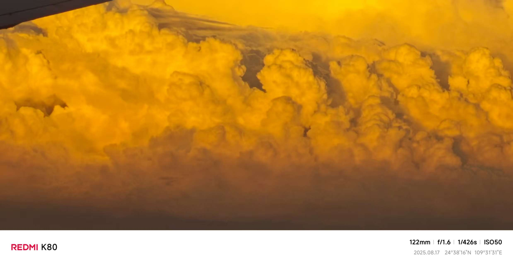
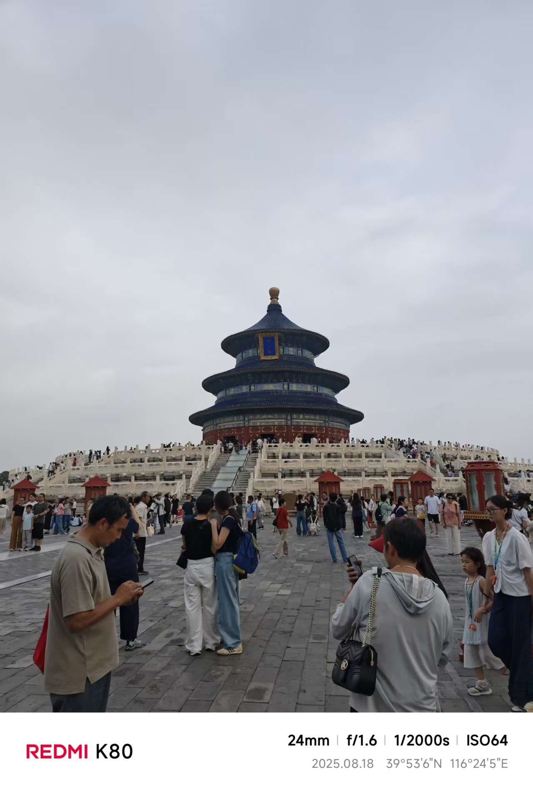
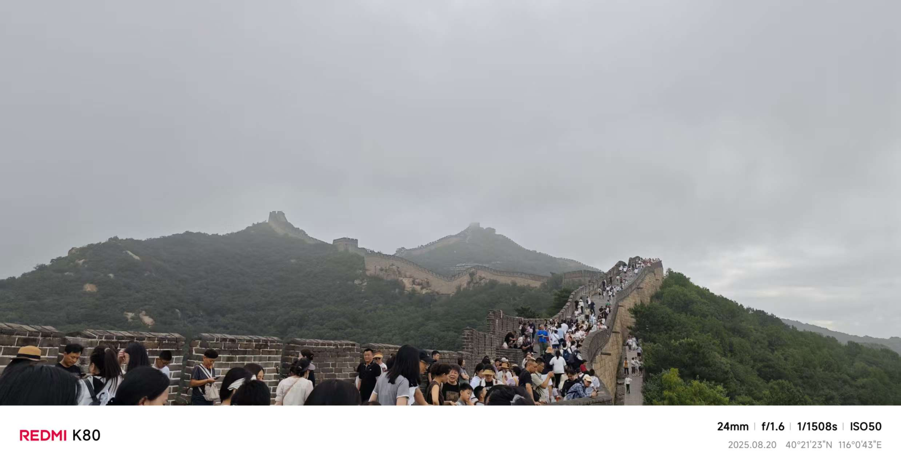
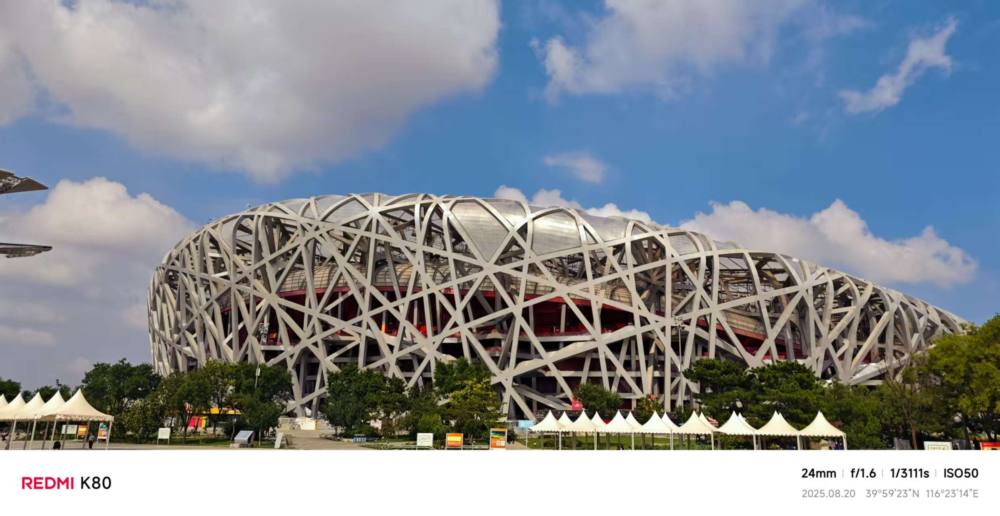
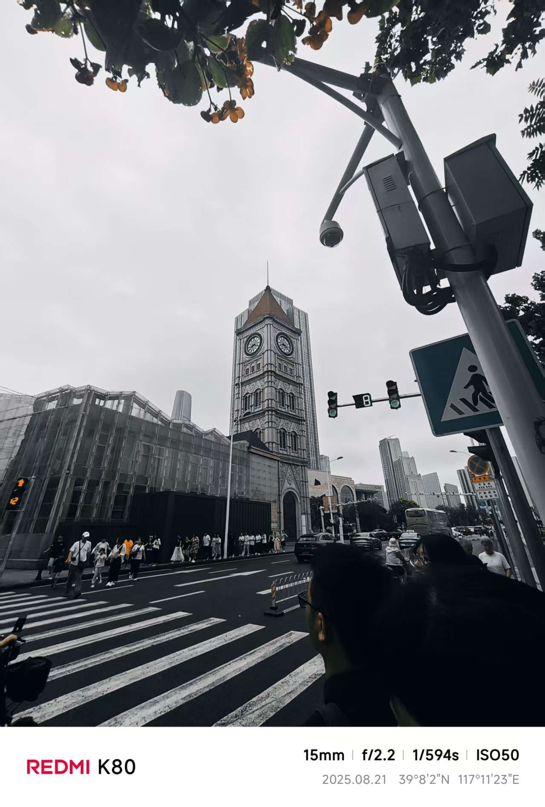
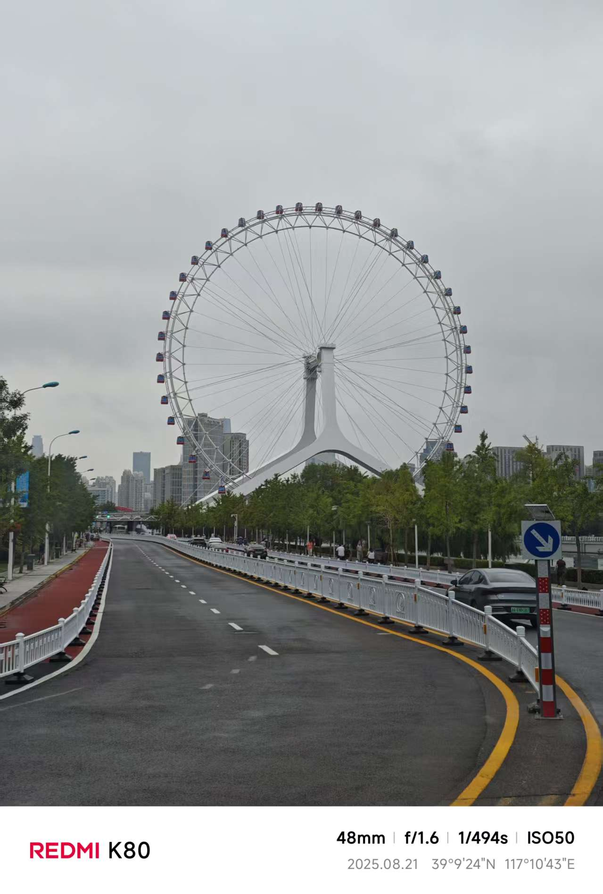
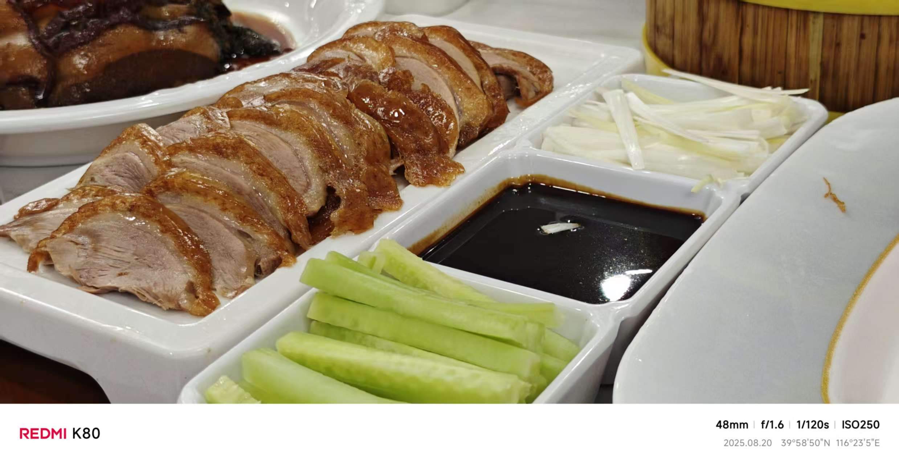
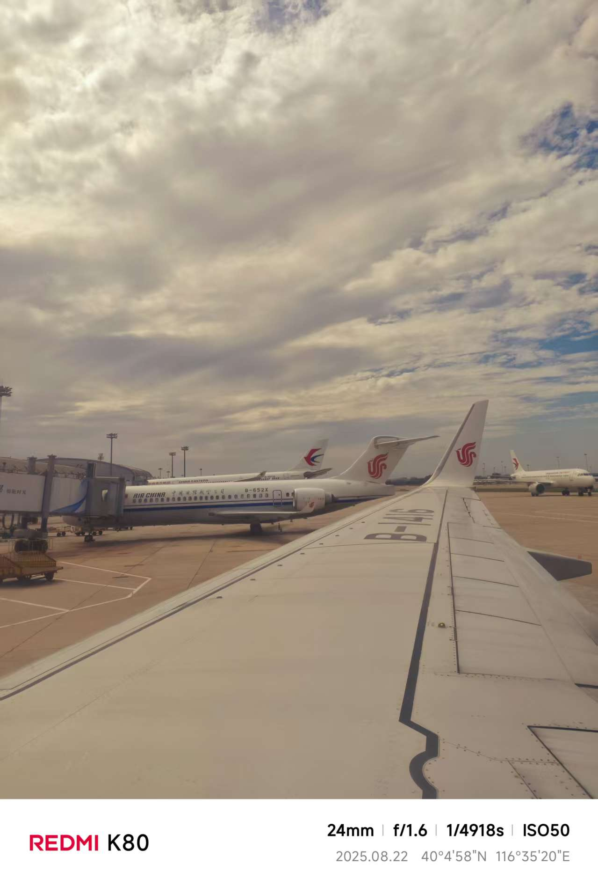

从柳州白莲到首都机场
暑假的晨光刚漫过柳州的山头，我已背着行囊站在白莲机场的航站楼前。攥着人生首张飞机票，指尖触到纸质票根的纹路时，连呼吸都带着紧张 —— 这是我第一次告别南方小城的喀斯特地貌，飞往魂牵梦萦的帝都。过安检时，背包里的公路自行车锁扣叮当作响，工作人员笑着打趣：“小伙子是要去北京骑车吗？” 我红着脸点头，那份局促在陌生人的善意里悄悄消散。
登机后，机翼划破晨雾的瞬间，心跳跟着飞机的爬升加速。从舷窗俯瞰，柳州的山水渐渐缩成青绿的墨点，而后被无垠的云海覆盖。

阳光穿透云层洒在机舱里，像铺了一层碎金，两个多小时的航程里，我始终贴着窗户，看着地貌从南方的丘陵沟壑，慢慢过渡到北方的平原旷野，直到首都国际机场的银色航站楼刺破天际，才真切感受到：北京，我来了!
天坛与北外的人文印记
抵达北京的第一站，我直奔天坛。红墙黄瓦在盛夏的阳光下熠熠生辉，圜丘坛的汉白玉栏杆泛着温润的光泽，踩在层层递进的石板上，能听见历史的回响。祈年殿的飞檐翘角直指苍穹，殿内的斗拱结构巧夺天工，让我忍不住驻足良久，惊叹古人的匠心独运。在回音壁前，我对着墙壁轻声呼喊，清晰的回声传来时，仿佛在与百年前的时光对话。
午后的阳光透过树叶洒在北外的校园里，绿树成荫的小道上，随处可见抱着书本的学子，偶尔能听见不同语言的交谈声，空气中都弥漫着求知的气息。遇到几位热情的学长学姐，得知我是软件技术专业的学生，主动拉着我在教学楼前合影，还分享了他们的学习经验。站在校园的公告栏前，看着海外交流项目的海报，我忽然想起自己的大数据应用开发专业，或许未来某天，我也能通过技术搭建起跨文化沟通的桥梁。
 天安门广场的庄严时刻
为了看天安门升旗，我凌晨三点就摸黑赶往广场。天公不作美，半路突然下起瓢泼大雨，豆大的雨点砸在伞面上噼啪作响，裤脚很快被雨水浸湿，冷风裹着湿气钻进衣领，却没人愿意退缩。来自五湖四海的游客们挤在伞下，彼此分享着纸巾和热水，陌生的善意让雨夜变得温暖。
当东方泛起鱼肚白，仪仗队迈着整齐划一的步伐从天安门走出时，广场瞬间陷入寂静。雨声似乎都变得轻柔，只剩下铿锵有力的脚步声回荡在天地间。《义勇军进行曲》奏响的刹那，国旗缓缓升起，我下意识地挺直腰板，跟着旋律轻声哼唱，眼眶不知不觉湿润了。雨水中，国旗的红色格外鲜艳，那一刻，所有的疲惫与寒冷都烟消云散，只剩下心中激荡的自豪与庄严。升旗仪式结束后，我赶紧拿出手机自拍，让天安门的红墙与飘扬的国旗，成为这趟旅程最珍贵的背景。
长城上的攀登与眺望
“不到长城非好汉”，这句话在我站在八达岭长城脚下时，才有了真切的体会。长城像一条巨龙蜿蜒在群山之巅，灰色的城墙在绿树的映衬下更显雄伟。攀爬的过程远比想象中艰难，陡峭的台阶高低不平，有些地方几乎垂直，我扶着城墙扶手，一步一步向上挪动，汗水很快浸透了衣衫。
站在烽火台上远眺，群山连绵起伏，长城顺着山势延伸到天际，那种开阔与震撼难以用言语形容。吹着山间的风，想起古代将士们在此戍边的场景，心中满是敬畏。我拿出手机，在烽火台前拍下一张又一张照片，记录下这 “一夫当关，万夫莫开” 的壮丽景色。下山时，虽然双腿酸痛，但那种征服后的成就感，让我想起骑行时登顶的喜悦 —— 无论是爬坡还是前行，坚持就能看到不一样的风景。
 鸟巢里的奥运记忆
离开长城后，我赶往奥林匹克公园，远远就看到了鸟巢独特的钢结构建筑，像一个巨大的鸟巢矗立在城市中。走近细看，钢铁交织的纹路充满力量感，阳光照射下，金属表面泛着冷冽的光泽。进入场馆内，空旷的看台仿佛能容纳万千观众的欢呼，脑海中不由自主浮现出奥运会开幕式的盛大场景。
我在鸟巢的跑道旁驻足，想象着运动员们奋力奔跑的身影，心中满是热血。找了个绝佳角度自拍，让这座现代建筑成为背景，定格下这份对拼搏精神的向往。场馆外的广场上，有小朋友在追逐嬉戏，有老人在散步聊天，现代与生活气息在此交融，让我感受到北京的多元与包容。
 天津意大利租界的慢时光
北京的行程接近尾声，我临时决定前往天津，感受这座城市的别样风情。从北京坐高铁半小时就到了天津，直奔意大利租界。漫步在欧式风情的街道上，彩色的洋房、精致的雕塑、复古的路灯，仿佛置身异国他乡。街道两旁的咖啡馆飘出浓郁的香气，街头艺人弹着吉他，旋律悠扬。
"
我沿着海河散步，看着河面上的游船缓缓驶过，岸边的建筑倒映在水中，美不胜收。在一栋复古洋房前，我停下脚步拍照，阳光透过树叶洒在墙上，留下斑驳的光影。偶尔有当地居民热情地给我指路，分享附近的美食，那份亲切感让我很快融入这座城市。在这里，没有北京的行色匆匆，只有慢下来的惬意与舒适，让我在旅程的最后，收获了一份宁静与放松。
" 北京烤鸭的圆满滋味
回到北京的最后一晚，我终于吃到了心心念念的北京烤鸭。刚出炉的烤鸭色泽油亮，外皮酥脆，师傅当场片成薄片，卷上荷叶饼，配上黄瓜丝、葱丝和甜面酱，一口咬下去，油脂的香气与蔬菜的清爽在口中交织，回味无穷。
"
店里人声鼎沸，大家一边品尝美食，一边畅谈见闻。邻桌的大爷和我聊起北京的变化，从胡同到高楼，从过去到现在，言语间满是对这座城市的热爱。这场舌尖上的盛宴，不仅满足了味蕾，更让我感受到了北京的烟火气。
带着收获与期待再出发
踏上返程的飞机，看着窗外北京的轮廓渐渐模糊，心中满是不舍与期待。这趟旅程，从第一次坐飞机的紧张，到雨中升旗的震撼；从长城的雄伟到鸟巢的现代；从北京的古韵到天津的异域风情，每一个瞬间都值得珍藏。
旅途中的所见所闻，不仅开阔了眼界，更让我坚定了前行的方向。回到柳州后，我会把这份收获转化为动力，深耕大数据应用开发专业，像骑行爬坡一样，一步一个脚印提升自己。或许未来某天，我会带着更扎实的技能回到北京、天津，用技术为这座城市添砖加瓦。这趟盛夏的双城记，不仅是一次旅行，更是一场成长的洗礼，让我在青春的路上，带着热爱与勇气，继续前行。
